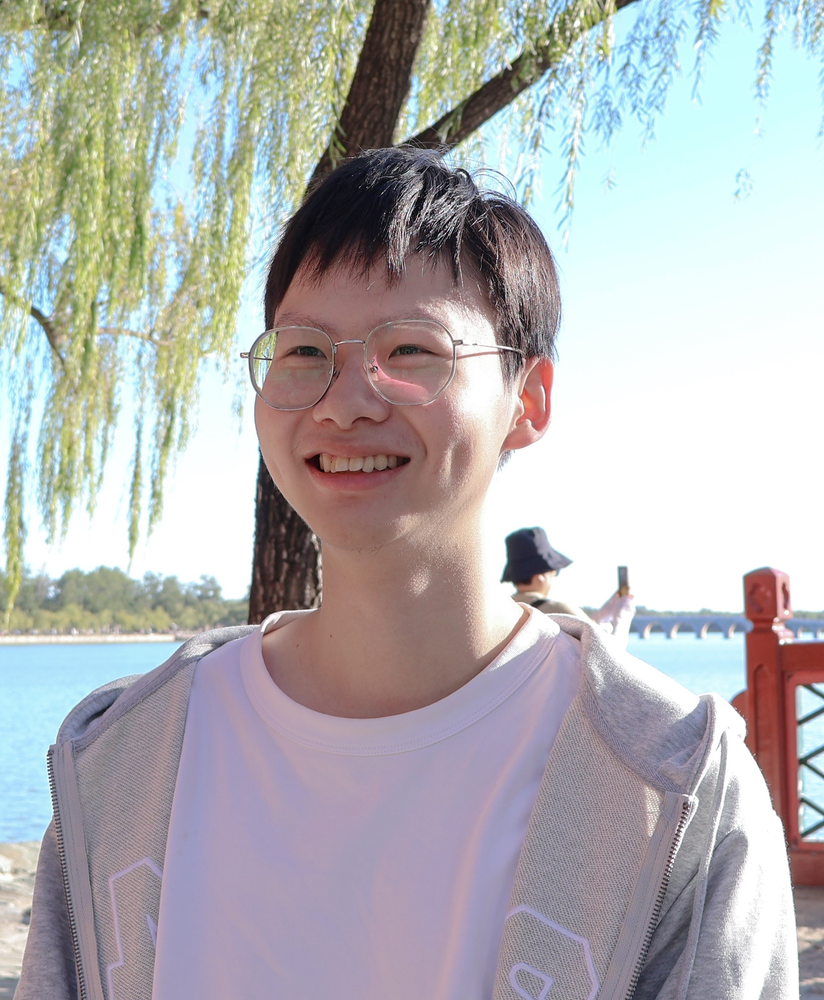
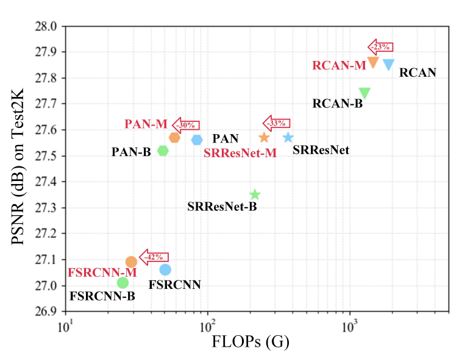

|  |
Xiaotao is currently a second-year master student in Computer Media Lab of Nankai University, Tianjin, China, advised by Jun Xu and Bo Ren.
Meanwhile, he is also an intern in Megvii, working closely with Zhewei Huang.
His current interests include computer vision, video prediction, super resolution. Google Scholar Github |
||
|
A Dynamic Multi-Scale Voxel Flow Network for Video Prediction
Xiaotao Hu, Zhewei Huang, Ailin Huang, Jun Xu, Shuchang Zhou CVPR 2023 (Highlight) Project page | Paper | Code |
|
|  |
Restore Globally, Refine Locally: A Mask-Guided Scheme to Accelerate Super-Resolution Networks
Xiaotao Hu, Jun Xu, Shuhang Gu, Ming-ming Cheng, Li Liu ECCV 2022 (Oral) Paper | Code |